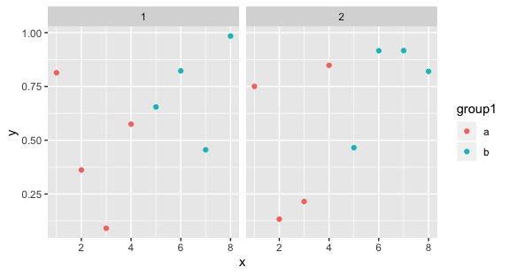
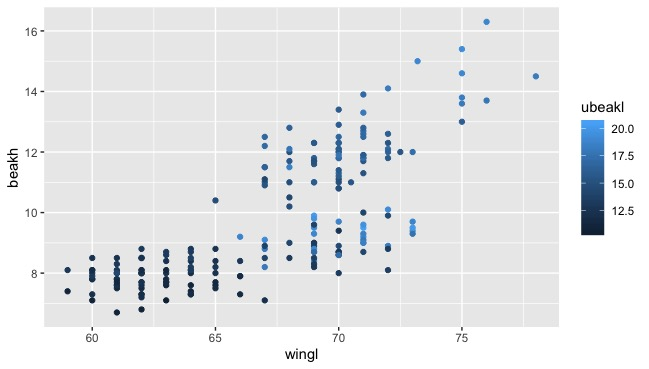
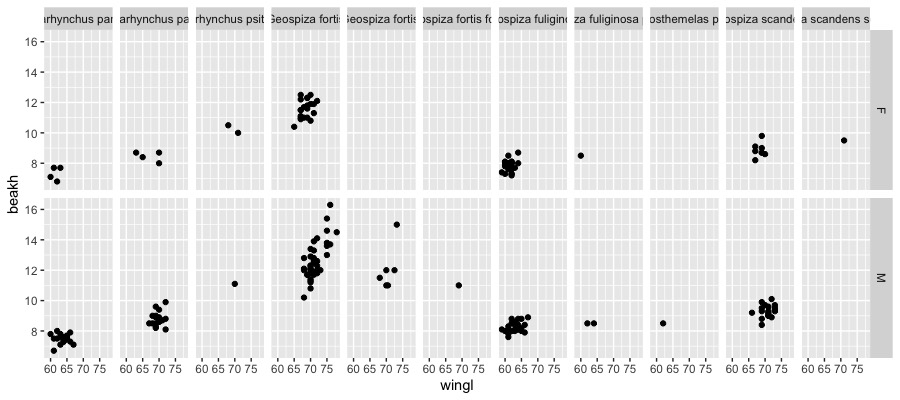
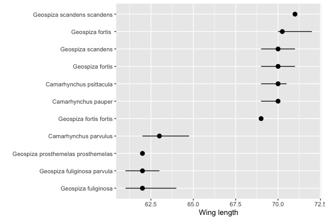
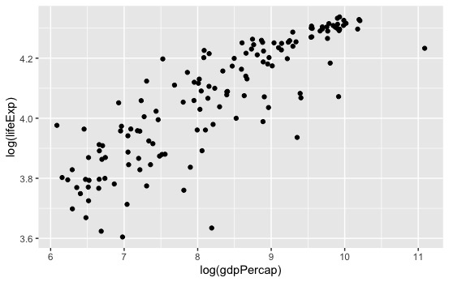

R学习
前言
本科时期用SAS的老师说用Excel做出来的图期刊不会接受，教SPSS的老师说只有标了用SPSS做的数据那些编辑才会相信，而这时候用Matlab的人又站出来说在座的各位都是垃圾。说到底数据科学最终追求的处理工具应当是一种可以在数学处理上有着极其丰富的手段，而在图表输出上有着最大自由的工具，这些，MatlabR语言都可以做到。但是功能越自由则操作越难，人们总是希望有一个GUI甚至最好是语音操控就可以轻松处理数据，但实际上我们却要在GitHub或者CSDN上苦苦寻找一下午的代码来完成一些简单的回归统计。
R语言在其他学科中属于小角色，但是在生态学中，由于其开源、灵活、免费、简单，因此已经有超过50%的相关学者选择R语言作为他们的研究工具，而当前的生态相关的sci文章中，也有超过50%的文章使用R语言完成其科研分析，其中使用频次最多10个包是lme4, vegan, nlme, ape, MuMIn, MASS, mgcv, ade4, multcomp和car。
因此在这篇R学习当中，我希望
- 分享学习R语言的进度，同时也是给自己增加一些学习的压力与动力。
- 避免不求甚解，成为无情的代码搬运工，我希望可以从数学出发，对R语言的分析做一个“面向对象”又“直达底层”的综述。
从安装R和Package开始
安装R
不多说
可以安装一下R Studio，这是一个R语言的IDE，它还拥有比较强大的调试功能，也支持纯R脚本和Rmarkdown（这在下载一些R的联系教程时格外有用！），下载时选择免费版即可。
tips：在Rstudio中，我们可以设置断点来分段检查bug。
这里还要推荐一个环境管理软件Anaconda。Anaconda可以创建多个互不干扰的环境（类似python的env），分别运行不同版本的软件包。Anaconda还自带了Jupyter Notebook，可以灵活地记笔记，运行与交互，是机器学习的终极伙伴。同时这个软件也自带R studio，几乎集成了你能知道的所有数学分析工具，吹就完事儿了。
R Packages
R包是R语言的精华，只要会装r包，那恭喜你可以成为数据科学家了
我们通过：
install.packages()
在选择适合自己的CRAN镜像后安装我们想要的R包。R包的安装是套娃式的，我们往往装一个R包会提示需要许多前置R包，然后不知不觉就装了几百个R包。我们可以通过：
installed.packages()
来单纯看看有什么包，或通过：
rp <- available.packages() > dim(rp)
看看包和他们的版本，不过有时候莫名安装过了而且是最新的但是还是说没有，还得重新装一遍，也挺奇怪的。
那么，如何知道我们想要什么包呢？
- 在我们阅读的（导师塞给你的）文献中，作者在分析时往往会给出他使用的R包的名称。
- 我给你们塞一些必备R包orz（不针对特定专业）
工具类： readxl包可以直接读取excel的数据，tidyxl和tidyr包可以整理乱七八糟的excel；dplyr包则是归类整理excel等这种数据集的最强包；RMySQL包可以和SQL对接；smartdata包可以做数据预处理（这里推荐基于python的pandas_profiling做数据预览，铁爽).
绘图类： gplots可以做数据可视化，ggplot2包可以用来画你想要的任何图，而ggraph包可以拓展ggplot2的各种功能。vioplot用于制作小提琴图，rainbow用于画彩虹图、箱形图和条形图。rgl包则可以在R中实现3D交互可视化。
统计类： car包用于方差分析、lme4包和nlme包用于实现线性/非线性的混合效应模型，rendomForest包可以实现机器学习中的随机森林模型，multcomp包则可以进行多重比较分析,MuMIn包则可以用来解决混合效应模型。
深度学习： nnet包是最简单的一个单层的神经网络的包，neuralnet则是一个多层多节点的神经网络算法包，keras包则是一个基于TensorFlow的Keras接口（API)，automl则是一个基于元启发的（如蚁群算法、粒子群算法）的深度学习包。
之后我想通过一个个场景的训练/尝试来介绍每个场景中遇到的R包和R包后的数学原理以及这些R包的使用方法。
利用R整理并绘制数据
ggplot2
ggplot2是R中最高效的绘图工具，在ggplot2中，我们的数据集必须得是data.frame格式，这种格式易于保存数据，而且能在保留原有的绘图参数下, 用%+%方便地变更已有数据集。ggplot2由数据与映射、几何对象(geom)、统计变化(stats)、标度、坐标系(coord)和分面(facet)这几个部分构成。在实际操作中，我们通过”+”将这些功能以图层的形式连接在一起。
我们对数据进行绘图，使用df = ggplot(data, aes(x,y))即可以得到一个数据源于data，横坐标为x，纵坐标为y的图框（只是一个框）
我们通过+ geom_point()的方式给框里添加一个散点图进去，散点的透明度可以用alpha函数去指导（0< alpha <1)，而我们还可以通过position = position_对图形元素进行调整:（在从lm()开始进行简单线性回归中的的第一张图里我们会用到这个）
dodge为避免重叠，并排放置；fill为堆叠图形元素并将高度标准为1（标准化），position为描述；identity为不做变化；jitter为对点添加扰动以免重合（不知道这样会不会对数据的严谨性造成影响），stack为将图形元素堆叠
data.frame
一般翻译为数据框，就是R语言中的表，由行和列组成，与Matrix不同的是，其每个列可以是不同的数据类型。
我们可以使用data.frame函数初始化一个Data Frame（听起来有点像SQL语言）
#这里的c()是将括号中的元素连接起来，但不创建向量，而`paste()`则会创建向量。 #我们就会得到一个列名为ID、Name、Gender的表格 student<-data.frame(ID=c(1,2,),Name=c("Eden","Edward"),Gender=c("M","M")) #我们可以访问里面的元素，比如我们想看第二列： student[,2] #那要看其中几列，我们可以（注意是：）： idname<-student[1:2] #也可以是 idname<-student[c("ID","Name")]
那么其实还是得装一个“sqldf”包，然后就可以用SQL语言去查询了，属实方便：
library(sqldf) result<-sqldf(“select XX from XX")
那么接下来我们去生成这样的一个数据框来熟悉一下：
#生成一个数据框，其中列x为1-8和1-8（共16个数），列y为使用runif()函数生成的16个服从正态分布的随机数。runif(n,min=0,max=1)意为生成一个数量为n，分布下限为0，上限为1的正态分布的数。 #我们将group1定义为一个循环2次（rep(x,n)为将x循环n次）的一组数 #这组数通过gl()函数定义为了2级因子，重复4次，水平为a和b的两组数。 d <-data.frame(x = c(1:8, 1:8), y = runif(16), group1 = rep(gl(2, 4, labels = c("a", "b")), 2) group2 = gl(2,8)) head(d)
我们使用ggplot2可以将它们画出来，我们使用facet_grid()函数将表格按group分面并且group显示在表头:
ggplot(data = d, aes(x = x, y = y, colour = group1)) + geom_point() + facet_grid(~group2)
可得：

可以利用随机数来自得其乐。
接下来我们使用加拉帕戈斯雀的数据进行练习……这个数据大概要一直用到博客更完，数据来源在http://bioquest.org/birdd/morph.php。这是Sato等在2000于Mol. Biol. Evol.上发的文章中的数据 http://mbe.oxfordjournals.org/content/18/3/299.full。
#我们通过stringsAsFactors = FALSE来避免R将字符串string的列当成变量/因子factor去瞎搞 morph <- read.csv("data/raw/Morph_for_Sato.csv", stringsAsFactors = FALSE) #tolower()函数将字母全变成小写，toupper()则相反 names(morph) <- tolower(names(morph)) #通过filter(.data=,condition_1,condition_2)来根据condition进行数据的筛选，我们筛选出“Flor_Chrl"岛的数据 morph <- filter(morph, islandid == "Flor_Chrl") #选择我们用来分析作图的数据 morph <- select(morph, taxonorig, sex, wingl, beakh, ubeakl) #重命名列 morph <- rename(morph, taxon = taxonorig) #使用na.omit删去所有的na行，即删去所有数据缺失的行 morph <- data.frame(na.omit(morph)) # remove all rows with any NAs to make this simple #把morph作为一个data.frame，但此时R会说”`as_data_frame()` is deprecated, use `as_tibble()` (but mind the new semantics).“，那就用as_tibble()？？？，但是tibble不能使用glimpse()工具…… morph <- as_data_frame(morph) #使用set.seed()函数保证我们设置的随机数每次都一样，此时()内的数只是一个标记，对结果没有影响 set.seed(1) #使用sample(x=x,size=n,replace=T)来对数据集x进行有放回的n次抽样 #使用seq(from,to,lenth),来对生成一组从什么到什么间隔什么的数，而seq_len(nrow(morph))即为从morph的行数中生成一个从1开始，步长为1的向量/也可以说是从1开始步长为1的一列数去对应morph的各行 那么我们要从morph列的各行中随机挑选200个数据作为morph的数据集 morph <- morph[base::sample(seq_len(nrow(morph)), 200), ] morph #使用glimpse功能转置数据以便更好地研究变量 glimpse(morph)
效果如图：
#这是原效果
taxon sex wingl beakh ubeakl
<chr> <chr> <dbl> <dbl> <dbl>
1 Geospiza scandens M 66 9.2 18.7
2 Camarhynchus pauper M 67 8.5 14
3 Geospiza fuliginosa M 59 8.1 13
4 Geospiza fuliginosa M 66 8.4 13
5 Geospiza fortis M 71 13.3 18
6 Geospiza fortis M 70 12.3 15.8
7 Camarhynchus psittacula M 70 11.1 14.2
8 Geospiza fortis M 75 15.4 19.4
9 Geospiza fuliginosa F 64 8 11.9
10 Geospiza fortis M 72 12.6 16.2
#这是glimpse后的效果：
Observations: 200
Variables: 5
$ taxon <chr> "Geospiza scandens", "Camarhynchus pauper", "Geospiza …
$ sex <chr> "M", "M", "M", "M", "M", "M", "M", "M", "F", "M", "M",…
$ wingl <dbl> 66, 67, 59, 66, 71, 70, 70, 75, 64, 72, 61, 70, 62, 64…
$ beakh <dbl> 9.2, 8.5, 8.1, 8.4, 13.3, 12.3, 11.1, 15.4, 8.0, 12.6,…
$ ubeakl <dbl> 18.7, 14.0, 13.0, 13.0, 18.0, 15.8, 14.2, 19.4, 11.9, …
几何对象(geom)
几何对象就是图标中的点线面，geom有以下这些功能：
`geom` | Description
------------------- | -----------
`geom_point()` | Points
`geom_line()` | Lines
`geom_ribbon()` | 可以指定函数的上下边界，geom_ribbon(aes(ymin = a+b, ymax=a-b)) + geom_line来做一个关于a在直线上活动范围（往往是置信区间）的图表
`geom_polygon()` | 绘制多边形
`geom_pointrange()` | 中间有点的线状图？
`geom_linerange()` | 一种用三条直线来表示的箱形图？
`geom_path()` | 高级的geom_line，但是不限制画线的方向
`geom_histogram()` | 直方图
`geom_text()` | 将文本和数值插入到图中，比如给散点图每个点做注释，我们可以使用(check_overlap = TRUE)来让所有的注释不重叠。
`geom_label()` | 高级的geom_text()，可以给注释文字加个框
`geom_violin()` | Violin plot (another name for a beanplot)，beanplot是高级的小提琴图，有个包可以去研究研究
`geom_map()` | 画地图，然而我用ArcGIS，不谈
`geom_bar()` | 柱状图
我们来应用一下：
#考察翅膀长度和性别之间的关系 ggplot(morph, aes(sex, wingl)) + geom_violin()

#r通过箱型图翅膀长度和物种间的关系，箱型图中的小点为异常值
ggplot(morph, aes(taxon, wingl)) + geom_boxplot()

结果发现下面的物种名字我们都看不见了……
因此我们使用coord()来设置坐标系，就非常好了
ggplot(morph, aes(taxon, wingl)) + geom_boxplot() + coord_flip()

我们可以在geom_boxplot(aes(fill = ...))中设置箱子的颜色，这样我们就可以按supp（变量）去设置颜色。
我们也可以使用position = position_dodge()来调整箱型图之间的距离。
ggplot2的美学(Aesthetics)
我们可以对图表进行各种美学上的设置，这些设置往往会自动附加一个图例：
ggplot(morph, aes(wingl, beakh)) + geom_point(aes(colour = sex))

我们还可以通过图例里再加一个别的数据，如上喙长(ubeakl)，实现表格数据的套娃：
ggplot(morph, aes(wingl, beakh)) + geom_point(aes(size = ubeakl))

这样可能太丑了，我们需要换一种方式来表达：
ggplot(morph, aes(wingl, beakh)) + geom_point(aes(colour = ubeakl))

那我们可以把这些参数都加入，制作一张终极套娃：

我们要分类出图的话需要使用facet函数：其中warp是对一个因子分类，而grid是对多个因子：
facet_wrap(facets, nrow = NULL, ncol = NULL, scales = "fixed", shrink = TRUE, as.table = TRUE, drop = TRUE) #nrow,ncol为设置的行和列，scales为坐标轴刻度，其中参数fixed表示固定坐标轴刻度，而free表示反馈坐标轴刻度；shrink也和坐标轴刻度有关，如果为TRUE（默认值）则按统计后的数据调整刻度范围 #drop表示是否去掉没有数据的分组，默认情况下不显示，逻辑值为FALSE；as.table为和小图排列顺序有关的选项；space表示分面空间是否可以按照数据进行缩放，和scales一样 facet_grid(facets, margins = FALSE, scales = "fixed", space = "fixed", shrink = TRUE, labeller = "label_value", as.table = TRUE, drop = TRUE)
如：
ggplot(morph, aes(wingl, beakh)) + geom_point() + facet_wrap(~taxon, scales = "free")

或：
ggplot(morph, aes(wingl, beakh)) + geom_point() + facet_grid(sex~taxon)

接下来我们制作pointrange图？其实不知道有啥用……
准备数据并绘图：
morph_quant <- morph %>% #quantile()是取百分位的函数，[[1]]似乎是一个引用函数？ group_by(taxon) %>% summarise( l = quantile(wingl, 0.25)[[1]], m = median(wingl), u = quantile(wingl, 0.75)[[1]]) %>% #创造一个新列方便处理 mutate(taxon = reorder(taxon, m, function(x) x)) ggplot(morph_quant, aes(x = taxon, y = m, ymin = l, ymax = u)) + ylab("Wing length") + xlab("") + geom_pointrange() + coord_flip()

给ggplot添加P统计值
可以通过stat_compare_means函数给ggplot图像添加P值。该函数的表达式为：
stat_compare_means(mapping = NULL, data = NULL, method = NULL, paired = FALSE, ref.group = NULL, comparisons = NULL, hide.ns = FALSE, label.sep = ", ", label = NULL, label.x.npc = "left", label.y.npc = "top", label.x = NULL, label.y = NULL, geom = "text", position = "identity", na.rm = FALSE, show.legend = NA, inherit.aes = TRUE, ...)
一般来说我们通过“+”将这个图层附在我们的ggplot图层后，我们只需要使用：
stat_compare_means(method = NULL, ref.group = NULL, comparisons = NULL, label = NULL)
其中，method为我们进行统计时采用的方法，默认是Kruskal-Wallis，也可以设置为anova、t-test之类的，而comparisons是用来设置组间比较的并显示的函数，label函数则是选择怎样的显著性标记，而label.y可以调整添加的p值标志的高度。
R语言中的颜色
可以通过定义col参数自定义颜色，在r语言中可以使用col=c()来设定颜色填充，通过输入数字2(palette的第一种颜色)，或“red”这种英文，或rgb(1,0,0)这种rgb值或“#FF0000”这种rgb的代码表示来确定我们实际填充的颜色。
而通过palette()函数我们可以设置我们的调色板。
还可以使用RcolorBrewer包的brewer.pal()函数来填充颜色，包中颜色被分为了序列型(sequential)(display.brewer.all(type = "seq"))和分类型(qualitative)(display.brewer.all(type = "qual")和离散型(diverging)(display.brewer.all(type = "div")
在ggplot中，scale_fill_brewer()函数控制着图表的颜色变化，我们可以使用scale_fill_brewer(palette ="")来调节颜色，而颜色模板的名字则可以通过在包RColorBrewer中 - 运行 display.brewer.all()查看。
dplyr
dplyr包可以处理r语言内部或外部的一切结构化数据，它高效、快速、简洁，专注于dataframe对象，有着稳健的数据库接口，是学习r语言必备的数据简化工具。
一般而言我们在使用dplyr时会用到5个常用的函数：select为选择数据，filter为筛选数据，arrange为排序数据，mutate为列的修改，summarise为汇总整理。
可以下载http://esapubs.org/archive/ecol/E090/184/的PanTHERIA数据库获得关于物种和环境的数据作为dplyr操作的练手工具。
pantheria <- "http://esapubs.org/archive/ecol/E090/184/PanTHERIA_1-0_WR05_Aug2008.txt" download.file(pantheria, destfile = "data/raw/mammals.txt")
接下来加载dplyr包并对数据进行简化并查看：
mammals <- readr::read_tsv("data/raw/mammals.txt") #使用sub和gsub函数进行替换，sub()和gsub()的区别在于，前者只替换第一次匹配的字串（请注意输出结果中world的首字母），而后者会替换掉所有匹配的字串。 #将表中的0-9_(如05_这种)都删了，这种表达式为正则表达式 names(mammals) <- sub("[0-9._-]+", "", names(mammals)) #将表中的MSW给删了 names(mammals) <- sub("MSW", "", names(mammals)) mammals <- select(mammals, Order, Binomial, AdultBodyMass_g, AdultHeadBodyLen_mm, HomeRange_km2, LitterSize) #把所有大写字母变成小写并在前面加上“_” names(mammals) <- gsub("([A-Z])", "_\\L\\1", names(mammals), perl = TRUE) #把词首的“_”删去 names(mammals) <- gsub("^_", "", names(mammals), perl = TRUE) #把表格中的-999换成空值 mammals[mammals == -999] <- NA #将binomial替换为species names(mammals)[names(mammals) == "binomial"] <- "species" #变成数据框格式并打开 mammals <- as_data_frame(mammals) mammals
接下来横过来看看数据：
glimpse(mammals)
Observations: 5,416
Variables: 6
$ order <chr> "Artiodactyla", "Carnivora", "Carnivora", "Carnivora", "Carnivora", "Artioda…
$ species <chr> "Camelus dromedarius", "Canis adustus", "Canis aureus", "Canis latrans", "Ca…
$ adult_body_mass_g <dbl> 492714.47, 10392.49, 9658.70, 11989.10, 31756.51, 800143.05, 500000.00, 6359…
$ adult_head_body_len_mm <dbl> NA, 745.32, 827.53, 872.39, 1055.00, 2700.00, NA, 2075.00, 354.99, NA, NA, N…
$ home_range_km2 <dbl> 1.963200e+02, 1.010000e+00, 2.950000e+00, 1.888000e+01, 1.598600e+02, NA, NA…
$ litter_size <dbl> 0.98, 4.50, 3.74, 5.72, 4.98, 1.22, 1.00, 1.22, 1.01, NA, 1.02, 1.02, 1.02, …
使用select函数可以选取我们需要的数据：
#select(.data,...)来选取我们想要的信息 #可以根据列名选取 select(mammals, adult_head_body_len_mm, litter_size) #可以选取某列到某列 select(mammals, adult_head_body_len_mm: litter_size) #可以选取除了某列的其他列 select(mammals, -adult_head_body_len_mm) #也可以在select()中插入函数，如starts_with()可以按首字母(或首更多字母)来查找变量，而ends_with()则正相反，而contains()函数则对查找的位置没有限制，同时我们也可以按列号的数字来查找我们要的变量。
Filter函数可以方便地筛选数据（行数据）：
#筛选adult_body_mass_g行中数据大于1*10^7的行，而要筛选等于的数据用“==”来表示全等 filter(mammals, adult_body_mass_g > 1e7) #筛选科为Cetacea的且成体生物量小于200的行数据，我们用逗号“,”表示和，用竖线“|”表示或。我们也可以用is.xxx()来指定行为xxx filter(mammals, order == "Carnivora", adult_body_mass_g < 200)
arrange函数可以排序，默认从小到大，我们也可以通过desc()来设置成从大到小排序。同样地，我们可以使用group_by()函数进行分组
#对数据mammals，我们先按order排序，再按adult_body_mass_g从大到小排序 > arrange(mammals, order, desc(adult_body_mass_g))
Mutate函数可以调整列：
#给mutate表增加一个新列 glimpse(mutate(mammals, adult_body_mass_kg = adult_body_mass_g / 1000))
summarise函数可以进行一些总结性的工作：
#按科分类后计算平均质量，同时使用rm函数将na缺失值删除 head(summarise(group_by(mammals, order), mean_mass = mean(adult_body_mass_g, na.rm = TRUE)))
基于这些内容，我们可以通过函数嵌套的方式创建一个质量与长度之间的关系数据（在程序语言中我们通过缩进来表示函数的关系，相同缩进的都在一起）：
select( arrange( mutate(mammals, mass_to_length = adult_body_mass_g / adult_head_body_len_mm), desc(mass_to_length)), species, mass_to_length)
dplyr部分暂时完结。
输出图片
如果有RStudio，那么我们在图片的边上选择Export，格式的话也许可以选择EPS，这样我们可以在Adobe illustrator中打开并编辑。同时我们还可以使用“export”包进行导出，这里我们可以自定义图像的质量等参数：
library(export) filen <- tempfile(pattern = "ggplot") graph2tif(x=x, file = filen, dpi = 400, height = 5)
水平分析
入门单因素方差分析
通过r语言自带的函数（aov）即可进行简单的单因素方差（ANOVA）分析，我们可以比较因素A在r个水平下实验结果的差异究竟是随机的还是与水平相关的。
有这样一组数据：
organ.name<-factor(rep(c("root","stem","leaf","flower"),c(4,6,8,6))) exp.gen<- c(0.5,0.46,0.23,0.29,0.2,0.11,0.14,0.14,0.13,0.19,0.19,0.19,0.34,0.43,0.57,0.75,0.78,0.71,0.88,0.39,0.45,0.28,0.53,0.88) #可以通过t检验进行均值比较分析 pairwise.t.test(exp.gen,organ.name) #也可以进行anova分析 aov(exp.gen~organ.name) #将数据变为data.frame格式以便在ggplot2中打开 d <- data.frame(organ.name,exp.gen) #打开相关包，似乎直接加载ggpubr就行了？ library("ggplot2") library("magrittr") library("ggpubr") #接下来是标注并导出图片,使用ggplot添加箱型图与数据 p<-ggboxplot(d,x="organ.name",y="exp.gen",palette = c("#00AFBB", "#E7B800", "#FC4E07")) #添加比较的对象 my_comparisons <- list(c("flower", "leaf"), c("leaf", "root"), c("root", "stem")) #再添加anova分析，设置y轴高度为1.2（以便显示anova分析的值） p+stat_compare_means(comparisons = my_comparisons) + stat_compare_means(method = "anova",label.y = 1.2)

接下来可以根据p值绘制带有标注的anova图：
p + stat_compare_means(method = "anova",label.y = 1) + stat_compare_means(label = "p.signif", method = "t.test", ref.group = ".all.")

各种各样的回归
从lm()开始进行简单一元线性回归
首先需要从gapminder上获得一些练习数据，gapminder是一个有着全球各种数据的公益网站，我们可以通过R包“gapminder”去下载(http://github.com/jennybc/gapminder)。
我们先加载一些必要的包和数据：
library(tidyverse) library(broom) d <- gapminder::gapminder
tidyverse包是个合集，里面有dplyr实现数据整理，tidyr实现数据筛选，stringr实现字符串操作，还有ggplot2去作图。
broom包接受R中内置函数的杂乱输出（如lm和nls），并将它们转为整齐的数据帧。
第三行中我们使用双冒号在不打开包的情况下加载包中的某一功能，其语法为packagename::functionname。同时双冒号还可以在多个包下有同名函数时指定我们需要的包。
接下来我们打开d，这是一个6列1704行的表格
d
然后我们对数据进行绘图：
x = ggplot(d, aes(year,lifeExp))+ geom_point(alpha = 0.5, position = position_jitter(width = 0.6)) x
可以得到这样一张图：

接着我们来尝试进行寿命与年份间的简单线性回归：最简单的lm模型可以表示为df <- lm(a<-b)，即为用b去拟合a，并将结果输出到df里，然后我们输入summary(df)就能看到拟合结果了。我们可以利用coef()函数读取回归系数，并通过tidy()函数将回归结果整理成表格。
lm1 <- lm(lifeExp ~ year, data = d) summary(lm1) coef(lm1) tidy(lm1)
得到结果如下
Residuals:
Min 1Q Median 3Q Max
-39.949 -9.651 1.697 10.335 22.158
Coefficients:
Estimate Std. Error t value Pr(>|t|)
(Intercept) -585.65219 32.31396 -18.12 <2e-16 ***
year 0.32590 0.01632 19.96 <2e-16 ***
---
Signif. codes: 0 ‘***’ 0.001 ‘**’ 0.01 ‘*’ 0.05 ‘.’ 0.1 ‘ ’ 1
Residual standard error: 11.63 on 1702 degrees of freedom
Multiple R-squared: 0.1898, Adjusted R-squared: 0.1893
F-statistic: 398.6 on 1 and 1702 DF, p-value: < 2.2e-16
如何理解这里面的各种玩意儿呢？我们直接看Coefficients部分：
其中Estimate为估值，Std.Error为标准误差，t value为T值，Pr为P值，一般而言，P<0.05以为数据有显著差异，我们认为这些数据通过了显著性检验，可以用了，有了统计学意义，而P<0.001意为数据有极显著差异（现在一般不提这个，误导性比较强）。
接下来可以看看Multiple R-squared（拟合优度）和Adjusted R-squared（修正的拟合优度），就是所谓的R方了，数值越高说明拟合程度越好。
而F-statistic则是F检验，是用来检验方程的整体显著性的，我们通过观察它的P值去看看方程整体是否显著。
关于P-value和R^2
以前一直说什么显著差异极显著差异的，这时候我tm就要问了，我们线性回归为什么要扯什么显著差异，又不是做因素分析。所以P值有什么P用呢？
P-value是拒绝原假设犯第一类假设错误的概率（？），百度说是“原假设是正确的，但我们却拒绝了原假设”（？）。举个例子就是假设抛均匀硬币正面的概率是50%（P=0.5），那么现在抛5次硬币都是正面的概率显然为0.5^5=0.03125，如果我抛5次硬币都是正面，那么P=0.03125<0.05，有统计学意义了，就可以得出结论推翻原先的关于均匀硬币的说法了，我们据此可以认为这个硬币是不均匀的。
那么在线性回归中，原假设即为“其实这些数据是随机的，根本不存在什么线性”，我们通过P值检验推翻了这一原假设，即可正面“这些数据真不是随机的，而是有关系的”。
R方是什么，在SPSS中我们可以看到R-squared = SSR/TSS = 1-RSS/TSS，其中SSR为解释方差，RSS为残差平方和，TSS为固有方差。那么显然，可以用公式来表示这个R-squared：
对于，我们已经很熟悉了(见生态学数学原理线性代数章节)，而对于，这就是使用平均数来预测产生的错误（损失函数）（在ML中称为基准模型（Baseline Model），那么如果说我们辛辛苦苦回归来的错误甚至多于随便求个平均值的错误，就会小于0，就白给了。所以R方的值应当在0-1之间，且越大说明预测越准确。
那么调整R方又是什么呢？在R方的计算中，不断增加变量会提升模型的效果，但是其实并没有什么效果，而调整R方可以惩罚那些不显著的变量，来略微调低原先的R方。
回到正题，我们继续对gapminder数据进行一些处理并回归，在tidyverse包中，我们可以通过管道符%>%将前一个命令的输出作为后一个命令的输入，而不是使用嵌套函数搞一堆简称出来：
#我们先将上面的数据d称为life（套娃），然后按国家进行分类 life <- d %>% group_by(country) %>% #接着把分类完的数据使用summarise这个统计描述函数，将lifeExp定义为算术平均寿命，将gdpPercap定义为算术平均gdp。 summarise(lifeExp = mean(lifeExp), gdpPercap = mean(gdpPercap)) #对数据带了log，取了对数，然后画成散点图 ggplot(life, aes(log(gdpPercap), log(lifeExp))) + geom_point() #回归 lm2 <- lm(log(lifeExp) ~ log(gdpPercap), data = life) summary(lm2)
接着系统会生成结果：
lm(formula = log(lifeExp) ~ log(gdpPercap), data = life)
Residuals:
Min 1Q Median 3Q Max
-0.42480 -0.05350 0.01827 0.05729 0.23078
Coefficients:
Estimate Std. Error t value Pr(>|t|)
(Intercept) 2.920294 0.060789 48.04 <2e-16 ***
log(gdpPercap) 0.139064 0.007296 19.06 <2e-16 ***
---
Signif. codes: 0 ‘***’ 0.001 ‘**’ 0.01 ‘*’ 0.05 ‘.’ 0.1 ‘ ’ 1
Residual standard error: 0.1036 on 140 degrees of freedom
Multiple R-squared: 0.7219, Adjusted R-squared: 0.7199
F-statistic: 363.3 on 1 and 140 DF, p-value: < 2.2e-16

我们注意一下现在的是0.7219，结果很好，所以……
为什么要取对数？
我们先试试上面的数据不取对数会如何？
代码就不列了，结果如下：
lm(formula = lifeExp ~ gdpPercap, data = life)
Residuals:
Min 1Q Median 3Q Max
-42.058 -5.709 1.995 6.082 12.468
Coefficients:
Estimate Std. Error t value Pr(>|t|)
(Intercept) 5.308e+01 9.106e-01 58.29 <2e-16 ***
gdpPercap 8.862e-04 8.192e-05 10.82 <2e-16 ***
---
Signif. codes: 0 ‘***’ 0.001 ‘**’ 0.01 ‘*’ 0.05 ‘.’ 0.1 ‘ ’ 1
Residual standard error: 8.255 on 140 degrees of freedom
Multiple R-squared: 0.4553, Adjusted R-squared: 0.4514
F-statistic: 117 on 1 and 140 DF, p-value: < 2.2e-16

此时不仅仅是图丑出天际的问题了，而是变成了0.4553，数据的拟合程度都下降了好多！
首先要说明的是对数函数在其定义域内单调增，所以取对数后不会改变数据的相对关系，因此不用担心取了对数后数据不严谨了，乱了之类的。
接下来我尝试解释一下为什么取对数后我们的R方会提高，这也许可以从百度搜索引擎的机制开始讲起：
如果要搜索我们想要的信息，比如想去搜“薛定谔的猫”，那么搜索引擎是这么找到目标的呢？我们易得如果一个词在网页中出现的次数越少那么它越重要，因为显然我们搜索出的结果中肯定是首先与“薛定谔”有关的，而不是与“的”有关的，或者与“猫”有关的。也就是说如果一个关键词只在很少的网页中出现，我们通过它就容易锁定搜索目标，它的权重也就应该大。反之如果一个词在大量网页中出现，我们看到它仍然不很清楚要找什么内容，因此它应该小。概括地讲，假定一个关键词在个网页中出现过，那么越大，的权重越小，反之亦然。
这里就引入了“逆文本频率指数”（Inverse document frequency缩写为IDF）的概念，它的公式为
混合线性模型
固定因子与随机因子
混合线性模型考察既有随机因子，又有固定因子的模型的线性回归问题。而关于固定因子和随机因子，可参考csdn上的一篇博文：固定效应模型与随机效应模型
固定效应和随机效应的选择是大家做面板数据常常要遇到的问题，一个常见的方法是做huasman检验，即先估计一个随机效应，然后做检验，如果拒绝零假设，则可以使用固定效应，反之如果接受零假设，则使用随机效应。但这种方法往往得到事与愿违的结果。另一个想法是在建立模型前根据数据性质确定使用那种模型，比如数据是从总体中抽样得到的，则可以使用随机效应，比如从N个家庭中抽出了M个样本，则由于存在随机抽样，则建议使用随机效应，反之如果数据是总体数据，比如31个省市的Gdp，则不存在随机抽样问题，可以使用固定效应。同时，从估计自由度角度看，由于固定效应模型要估计每个截面的参数，因此随机效应比固定效应有较大的自由度.
R语言中实现混合线性模型可以使用lme4包或lmerTest包，这里以lmerTest包为例，其基本表达式为：
fit = lmer(data = , formula = DV ~ Fixed_Factor + (Random_intercept + Random_Slope | Random_Factor))
其中data为我们要处理的数据集，formula为表达式，DV是因变量，Fixed_Factor是固定因子（自变量），Random_intercept是随机截距（可以理解为因变量分布的不同？），Random_Slope是随机斜率，即认为不同群体受固定因子的影响不同，Random_Factor是随机因子。
我们以politeness数据为例进行计算：
politeness数据可以在github：https://github.com/usplos/Eye-movement-related/blob/master/politeness_data.csv中获得，本篇关于混合线性的模型的计算也源自该项目。该数据收集了若干被试（subject）的性别（gender），以及用不同的态度（attitude）在不同场合（scenario）下说话的音高（frequency）。 这是一个典型的被试内设计（7 * 2设计）。
先打开数据并加载相关r包：
politeness = readr::read_csv('/Users/desktop/r/politeness_data.csv') library(lme4) library(Matrix) library(lmerTest) #将scenairo变为因子型变量（离散型，原来是字符型） politeness$scenario = factor(politeness$scenario) politeness
进行混合线性计算：
#音高与固定因子态度和场合的关系，随机因子是性别与被试，它们基于的设计矩阵是态度，即为我们认为性别和被试对回归的影响的随机的 fit1 = lmer(frequency ~ scenario * attitude + attitude|subject + attitude|gender, data = politeness)
这时候系统提示：boundary (singular) fit: see ?isSingular这表明有些效应是彼此的线性组合或者某个地方的方差是0。当p>>n(比样本更多的参数)时也会发生这种情况。这也意味着模型可能被过度拟合和/或遭受数值稳定性问题。
summary(fit1)
得到结果：
Linear mixed model fit by REML. t-tests use Satterthwaite's method ['lmerModLmerTest'] Formula: frequency ~ scenario * attitude + (1 + attitude | subject) + (1 + attitude | gender) Data: politeness REML criterion at convergence: 680.1 Scaled residuals: Min 1Q Median 3Q Max -1.65342 -0.68640 -0.03677 0.50256 2.85422 #这里是随机效应的结果，variance为方差，Std.Dev为标准差，可以看出确实对不同的被试组合性别组而言，态度的影响是不同的 Random effects: Groups Name Variance Std.Dev. Corr subject (Intercept) 6.037e+02 24.5696 attitudepol 1.076e-02 0.1037 1.00 gender (Intercept) 6.467e+03 80.4167 attitudepol 1.118e+02 10.5749 -1.00 Residual 6.101e+02 24.7001 Number of obs: 83, groups: subject, 6; gender, 2 #固定效应的结果如下，我们发现场合3和4的音高是较显著的 Fixed effects: Estimate Std. Error df t value Pr(>|t|) (Intercept) 180.767 58.615 1.065 3.084 0.18720 scenario2 17.450 14.261 63.998 1.224 0.22557 scenario3 46.667 14.261 63.998 3.272 0.00172 ** scenario4 44.833 14.261 63.998 3.144 0.00253 ** scenario5 16.800 14.261 63.998 1.178 0.24313 scenario6 8.867 14.261 63.998 0.622 0.53631 scenario7 18.133 14.261 63.998 1.272 0.20813 attitudepol -9.717 16.102 9.583 -0.603 0.56023 scenario2:attitudepol 15.133 20.168 63.998 0.750 0.45578 scenario3:attitudepol -31.283 20.168 63.998 -1.551 0.12579 scenario4:attitudepol -4.650 20.168 63.998 -0.231 0.81839 scenario5:attitudepol -4.783 20.168 63.998 -0.237 0.81327 scenario6:attitudepol -14.703 20.701 64.030 -0.710 0.48011 scenario7:attitudepol -30.033 20.168 63.998 -1.489 0.14135 --- Signif. codes: 0 ‘***’ 0.001 ‘**’ 0.01 ‘*’ 0.05 ‘.’ 0.1 ‘ ’ 1 Correlation matrix not shown by default, as p = 14 > 12. Use print(x, correlation=TRUE) or vcov(x) if you need it convergence code: 0 boundary (singular) fit: see ?isSingular
但是这里的固定效应不是主效应和交互作用，要查看主效应和交互作用需要用anova()函数anova(fit1)得到；
Type III Analysis of Variance Table with Satterthwaite's method
Sum Sq Mean Sq NumDF DenDF F value Pr(>F)
scenario 19400.1 3233.4 6 64.006 5.2998 0.000173 ***
attitude 2789.7 2789.7 1 1.143 4.5725 0.253068
scenario:attitude 4985.4 830.9 6 64.006 1.3619 0.243577
---
Signif. codes: 0 ‘***’ 0.001 ‘**’ 0.01 ‘*’ 0.05 ‘.’ 0.1 ‘ ’ 1
可见只有场景的主效应显著，态度的主效应和交互作用都不显著。在上面建立的模型中，包含随机斜率和随机截距，但是注意到，有两个固定效应，是把两个固定效应及其交互作用全都作为随机效应，还是选其中部分作为随机效应呢？这里我们课题组的标准是：首先考虑全模型，即如下命令：
fitAll = lmer(frequency ~ scenario * attitude + (attitude * scenario|subject) + (attitude * scenario|gender), data = politeness)
然后报错，观测量的个数少于随机因子的个数，因此移除交互作用：
fitAll2 = lmer(frequency ~ scenario * attitude + (attitude + scenario|subject) + (attitude + scenario|gender), data = politeness)
结果模型似乎炸了，变成金字塔了，于是我们尝试移除一些随机因子：同时设立一个只有随机截距的零模型：
fitAll3_1 = lmer(frequency ~ scenario * attitude + (attitude|subject) + (attitude + scenario|gender), data = politeness); fitAll3_2 = lmer(frequency ~ scenario * attitude + (scenario|subject) + (attitude + scenario|gender), data = politeness); fitAll3_3 = lmer(frequency ~ scenario * attitude + (attitude+ scenario|subject) + (attitude|gender), data = politeness); fitAll3_4 = lmer(frequency ~ scenario * attitude + (attitude + scenario|subject) + (scenario|gender), data = politeness) fitZero = lmer(frequency ~ scenario * attitude + (1|subject) + (1|gender), data = politeness)
使用anova()分别比较各个模型和零模型的P值，发现都不显著，这时选取P值最小的作为实际在论文中使用的模型，即选取fitAll3_3。
广义线性模型
在R语言中可以通过glm()函数解决广义线性模型，此处我们运用logistic模型进行广义线性回归：
glm(formula,family = gaussian,data,...)
其中formula为要拟合的模型，而family为分布族，包括正态分布、泊松分布、二项分布等...分布族可以通过link=来选择连接函数，data为数据框。
首先导入数据，数据来源于我的github，最初源于教材《多元线性回归与R》：
data = readr::read_csv('/Users/desktop/r/result.csv') #其中x1为视力状况，1是好0是不好；x2为年龄；x3为驾车教育，1是有0是没有；y为是否出过事故，1是有0是没有 data
在这里y是因变量，只有两个值，因此我们可以把它看作是成功概率为的Bernoulli试验的结果（这种方法在进行二分类问题时很有用！），现在用Logistic回归模型进行分析：
假定模型为：
有：
logit.glm <- glm(y ~ X1 + X2 + X3, family = binomial,data = data) summary(logit.glm)
glm(formula = y ~ X1 + X2 + X3, family = binomial, data = data) Deviance Residuals: Min 1Q Median 3Q Max -1.5636 -0.9131 -0.7892 0.9637 1.6000 Coefficients: Estimate Std. Error z value Pr(>|z|) (Intercept) 0.597610 0.894831 0.668 0.5042 X1 -1.496084 0.704861 -2.123 0.0338 * X2 -0.001595 0.016758 -0.095 0.9242 X3 0.315865 0.701093 0.451 0.6523 --- Signif. codes: 0 ‘***’ 0.001 ‘**’ 0.01 ‘*’ 0.05 ‘.’ 0.1 ‘ ’ 1 (Dispersion parameter for binomial family taken to be 1) Null deviance: 62.183 on 44 degrees of freedom Residual deviance: 57.026 on 41 degrees of freedom AIC: 65.026 Number of Fisher Scoring iterations: 4
由此得到初步的Logistic回归模型：
即为：
由于参数和没有通过P值检验，可通过step()作变量筛选：
logit.step <- step(logit.glm, direction = "both") summary(logit.step)
glm(formula = y ~ X1, family = binomial, data = data) Deviance Residuals: Min 1Q Median 3Q Max -1.4490 -0.8782 -0.8782 0.9282 1.5096 Coefficients: Estimate Std. Error z value Pr(>|z|) (Intercept) 0.6190 0.4688 1.320 0.1867 X1 -1.3728 0.6353 -2.161 0.0307 * --- Signif. codes: 0 ‘***’ 0.001 ‘**’ 0.01 ‘*’ 0.05 ‘.’ 0.1 ‘ ’ 1 (Dispersion parameter for binomial family taken to be 1) Null deviance: 62.183 on 44 degrees of freedom Residual deviance: 57.241 on 43 degrees of freedom AIC: 61.241 Number of Fisher Scoring iterations: 4
可以得到新的回归方程为：
可见，即实力有问题的司机发生交通事故的概率是正常司机的两倍！